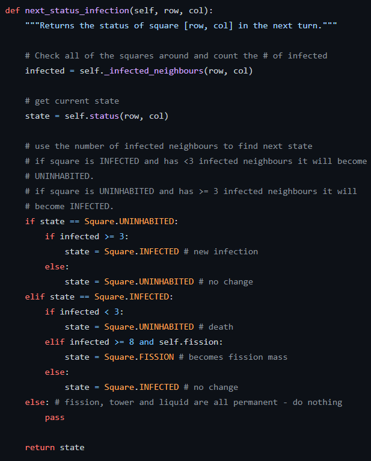

My name is Keandre Webb, and I am a third-year Honors Bachelor of Computer Engineering student at York University. As a passionate software developer, I am currently seeking opportunities to further develop my skills and knowledge through Co-Op and Internship experiences. My drive to learn and grow has led me to pursue this field, and I am excited to take on new challenges and collaborate with professionals in the industry.
As an Undergraduate Research Assistant at York University from May 2022 to Present, I worked with Graduate students on research projects, learning new skills and utilizing programming APIs such as TensorFlow. I also utilized Microsoft PowerPoint to create weekly presentations for my supervisors, communicating regularly with Graduate students and other research assistants to ensure project success. At a reputable research conference, I presented an update on the progress and future plans of the research project.


During the York University Programming Competition, I had the opportunity to work with a talented team of individuals to solve a challenging programming problem in a limited amount of time. Collaborating closely, we developed a comprehensive solution and a polished presentation to impress the judges. Our hard work paid off, as we earned second place in the competition. I was proud to demonstrate our solution and showcase our success to the judges.

